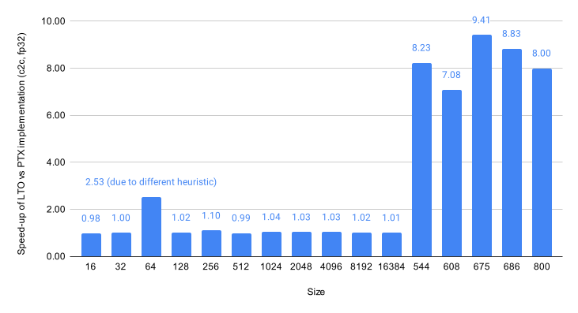

LTO Examples#
The cuFFTDx provides multiple samples which demonstrate how to use the features enabled by LTO.
Group |
Subgroup |
Example |
Description |
|---|---|---|---|
Introduction Examples |
09_introduction_lto_example |
introduction_lto_example |
(offline) cuFFTDx LTO introduction |
04_nvrtc_fft |
nvrtc_fft_block_lto |
(online) cuFFTDx LTO introduction |
|
10_cufft_device_api_example |
cufft_device_api_example |
(offline) cuFFT Device API introduction |
|
Simple FFT Examples |
01_simple_fft_thread |
simple_fft_thread_lto |
(offline) Complex-to-complex (C2C) thread FFT using LTO |
02_simple_fft_block |
simple_fft_block_c2r_lto |
(offline) Complex-to-real block FFT using LTO |
|
NVRTC Examples |
04_nvrtc_fft |
nvrtc_fft_thread_lto |
(online) Complex-to-complex thread FFT using LTO |
nvrtc_fft_block_lto |
(online) Complex-to-complex block FFT using LTO |
||
FFT Performance |
03_block_fft_performance |
block_fft_lto_ptx_performance |
(offline) Benchmark for C2C block FFT (LTO vs PTX) |
Runtime Database Query |
09_introduction_lto_example |
lto_query_database_example |
(offline) List all matching implementations from an offline LTO database |
04_nvrtc_fft |
nvrtc_query_database_fft_block_lto |
(offline) C2C block FFT using offline LTO database to obtain runtime traits |
|
04_nvrtc_fft |
nvrtc_query_autotune_lto |
(online) Autotune across all online LTO implementations via runtime query |
For more information about “online” vs “offline” annotated in the table above, see Augment cuFFTDx with LTO.
Introduction Examples#
introduction_lto_examplenvrtc_fft_block_ltocufft_device_api_example
Examples used in the documentation demonstrating how to adopt LTO features for existing cuFFTDx projects.
introduction_lto_example and nvrtc_fft_block_lto are used in the Augment cuFFTDx with LTO section
to showcase the steps for offline and online kernel generation, respectively.
In cufft_device_api_example, used in the Custom LTO Helper section, we demonstrate how to
write a custom LTO database helper tool using the cuFFT Device API, as an alternative to the LTO Helper.
Simple FFT Examples#
simple_fft_thread_ltosimple_fft_block_c2r_lto
The LTO version of the simple_fft_thread and simple_fft_block_c2r samples, respectively.
See Simple FFT Examples for more details.
NVRTC Examples#
nvrtc_fft_thread_ltonvrtc_fft_block_lto
The LTO versions of the existing NVRTC examples presenting how to use cuFFTDx on thread and block level with NVRTC and nvJitLink. See NVRTC Examples for more details.
FFT Performance#
block_fft_lto_ptx_performance
The example compares the performance of cuFFTDx device functions calculating FFT using the inlined-PTX implementation vs. the LTOIR implementation.


Fig. 7 Performance comparison between LTOIR and PTX implementations of a single-precision complex-to-complex forward FFT. Tests were performed on H100 80GB with maximum clocks set.#
Runtime Database Query Examples#
lto_query_database_examplenvrtc_query_database_fft_block_ltonvrtc_query_autotune_lto
The samples listed above demonstrate how to use the Runtime Database Query API
together with LTO. They cover the two LTO query modes (cufftdx::experimental::query_code_type::ltoir_offline and
cufftdx::experimental::query_code_type::ltoir_online) introduced in cuFFTDx 1.7.1. As noted in
Runtime Database Query, the LTO query modes require cuFFT 12.3 or later (from CUDA Toolkit 13.3).
All three examples have #define CUFFTDX_ENABLE_RUNTIME_DATABASE before including the cuFFTDx headers, since the
query_database and get_all_implementations APIs are gated behind this macro.
The experimental::query_code_type::ltoir_online mode (used by nvrtc_query_autotune_lto) additionally requires
CUFFTDX_ENABLE_CUFFT_DEPENDENCY to be defined and the application to be linked against cuFFT.
lto_query_database_example is a CUDA C++ example that includes an offline LTO database header (generated ahead of time
by the LTO helper) and calls
cufftdx::experimental::utils::get_all_implementations(...) with experimental::query_code_type::ltoir_offline to enumerate
every implementation that matches a given FFT configuration in the offline LTO database.
nvrtc_query_database_fft_block_lto is the LTO counterpart of the non-LTO nvrtc_query_database_fft_block example
(see NVRTC Examples). It uses cufftdx::experimental::utils::query_database(...) with
experimental::query_code_type::ltoir_offline to look up the optimal implementation for a given FFT inside a pre-generated
offline LTO database, then NVRTC-compiles a kernel that links against the matching pre-generated LTOIR artifacts via
nvJitLink.
nvrtc_query_autotune_lto shows how to autotune across every online LTO implementation that matches a given FFT
configuration. It calls cufftdx::experimental::utils::get_all_implementations(...) with
experimental::query_code_type::ltoir_online (which delegates to
query_all_cufft_implementations) to enumerate the candidates,
benchmarks each one, and then calls
cufftdx::utils::get_database_and_ltoir() to retrieve the database string and
LTOIRs for the selected configuration.